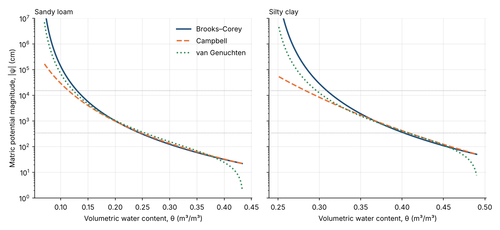
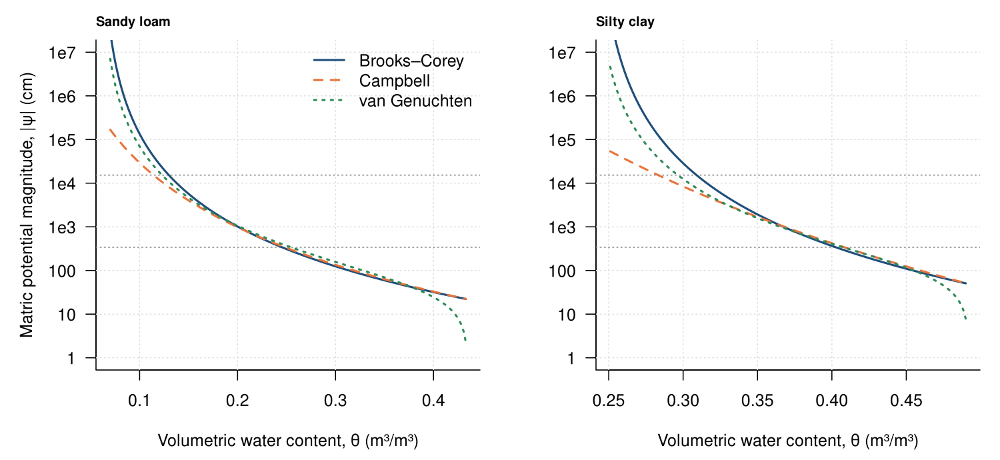
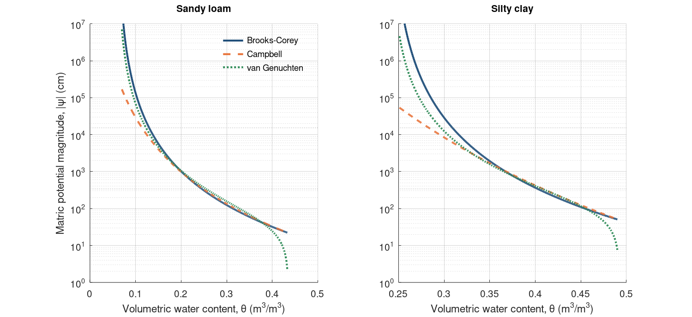

Chapter 7 · Soil Moisture and Infiltration
Soil water retention curves: Brooks–Corey, Campbell and van Genuchten (sandy loam and silty clay)
Matric potential vs volumetric water content for three retention models.
Source: Chapter 7 draft; parameters from the chapter author (Figures_4_5_6_and_Table1_2026_10_02.xlsx, RetentionCurves sheet; Clapp & Hornberger 1978 / Rawls et al. parameter sets)
No external data file: values are small and embedded in the code.

Code: retention_curve_models.py · image: figure_python.png

"""Soil water retention curves: Brooks–Corey, Campbell and van Genuchten (sandy loam and silty clay)
Chapter 7 draft; parameters from the chapter author (Figures_4_5_6_and_Table1_2026_10_02.xlsx, RetentionCurves sheet; Clapp & Hornberger 1978 / Rawls et al. parameter sets)
Run: python3 retention_curve_models.py -> figure_python.png"""
import numpy as np, matplotlib
matplotlib.use("Agg"); import matplotlib.pyplot as plt
# Parameters (RetentionCurves sheet). psi_ae = air-entry (cm); b = pore-size exponent.
soils = {"Sandy loam": dict(phi=0.435, thr=0.06, psi_ae=21.8, b_bc=3.9, b_camp=4.9, alpha=0.025, n=1.3),
"Silty clay": dict(phi=0.492, thr=0.241, psi_ae=49.0, b_bc=4.4, b_camp=10.4, alpha=0.01, n=1.3)}
def brooks(th, s): se = (th - s["thr"]) / (s["phi"] - s["thr"]); return s["psi_ae"] * se ** (-s["b_bc"])
def campbell(th, s): return s["psi_ae"] * (th / s["phi"]) ** (-s["b_camp"])
def vang(th, s):
se = (th - s["thr"]) / (s["phi"] - s["thr"]); m = 1 - 1 / s["n"]
return (se ** (-1 / m) - 1) ** (1 / s["n"]) / s["alpha"]
fig, axes = plt.subplots(1, 2, figsize=(10, 4.6), sharey=True)
for ax, (name, s) in zip(axes, soils.items()):
th = np.linspace(s["thr"] + 0.01, s["phi"] - 0.002, 400)
ax.plot(th, brooks(th, s), color="#1f4e79", lw=2, label="Brooks–Corey")
ax.plot(th, campbell(th[th > 0.01], s), color="#e8743b", lw=2, ls="--", label="Campbell") if False else ax.plot(th, campbell(th, s), color="#e8743b", lw=2, ls="--", label="Campbell")
ax.plot(th, vang(th, s), color="#2e8b57", lw=2, ls=":", label="van Genuchten")
ax.axhline(340, color="grey", lw=0.8, ls=":"); ax.axhline(15300, color="grey", lw=0.8, ls=":")
ax.set_yscale("log"); ax.set_ylim(1, 1e7); ax.set_title(name, loc="left", fontsize=10)
ax.set_xlabel("Volumetric water content, θ (m³/m³)"); ax.grid(alpha=0.25)
for sp in ("top", "right"): ax.spines[sp].set_visible(False)
axes[0].set_ylabel("Matric potential magnitude, |ψ| (cm)"); axes[0].legend(frameon=False)
fig.tight_layout(); fig.savefig("figure_python.png", dpi=150)

Code: retention_curve_models.R · image: figure_r.png

# Soil water retention curves: Brooks–Corey, Campbell and van Genuchten (sandy loam and silty clay)
# Chapter 7 draft; parameters from the chapter author (Figures_4_5_6_and_Table1_2026_10_02.xlsx, RetentionCurves sheet; Clapp & Hornberger 1978 / Rawls et al. parameter sets)
# Run: Rscript retention_curve_models.R -> figure_r.png (base R, no packages)
soils <- list("Sandy loam" = c(phi = 0.435, thr = 0.06, psi_ae = 21.8, b_bc = 3.9, b_camp = 4.9, alpha = 0.025, n = 1.3),
"Silty clay" = c(phi = 0.492, thr = 0.241, psi_ae = 49, b_bc = 4.4, b_camp = 10.4, alpha = 0.01, n = 1.3))
brooks <- function(th, s) { se <- (th - s["thr"]) / (s["phi"] - s["thr"]); s["psi_ae"] * se^(-s["b_bc"]) }
campbell <- function(th, s) s["psi_ae"] * (th / s["phi"])^(-s["b_camp"])
vang <- function(th, s) { se <- (th - s["thr"]) / (s["phi"] - s["thr"]); m <- 1 - 1 / s["n"]; (se^(-1 / m) - 1)^(1 / s["n"]) / s["alpha"] }
png("figure_r.png", width = 1500, height = 690, res = 150)
par(mfrow = c(1, 2), mar = c(4.5, 4.8, 2, 1), las = 1)
for (nm in names(soils)) {
s <- soils[[nm]]; th <- seq(s["thr"] + 0.01, s["phi"] - 0.002, length.out = 400)
plot(NA, xlim = range(th), ylim = c(1, 1e7), log = "y", xlab = "Volumetric water content, θ (m³/m³)",
ylab = if (nm == "Sandy loam") "Matric potential magnitude, |ψ| (cm)" else "", bty = "l", yaxt = "n")
axis(2, at = 10^(0:7), labels = c("1", "10", "100", "1e3", "1e4", "1e5", "1e6", "1e7")); grid(col = "grey88")
abline(h = c(340, 15300), lty = 3, col = "grey50")
lines(th, brooks(th, s), col = "#1f4e79", lwd = 2); lines(th, campbell(th, s), col = "#e8743b", lwd = 2, lty = 2)
lines(th, vang(th, s), col = "#2e8b57", lwd = 2, lty = 3)
mtext(nm, side = 3, adj = 0, font = 2, cex = 0.8, line = 0.5)
if (nm == "Sandy loam") legend("topright", bty = "n", legend = c("Brooks–Corey", "Campbell", "van Genuchten"), col = c("#1f4e79", "#e8743b", "#2e8b57"), lty = 1:3, lwd = 2)
}
invisible(dev.off())

Code: retention_curve_models.m · image: figure_matlab.png

% Soil water retention curves: Brooks–Corey, Campbell and van Genuchten (sandy loam and silty clay)
% Chapter 7 draft; parameters from the chapter author (Figures_4_5_6_and_Table1_2026_10_02.xlsx, RetentionCurves sheet; Clapp & Hornberger 1978 / Rawls et al. parameter sets)
% Run: run retention_curve_models.m -> figure_matlab.png (MATLAB or GNU Octave)
clear; close all;
% Parameters (RetentionCurves sheet). psi_ae = air-entry (cm); b = pore-size exponent.
names = {'Sandy loam', 'Silty clay'};
phi = [0.435 0.492]; thr = [0.06 0.241]; psi_ae = [21.8 49]; b_bc = [3.9 4.4]; b_camp = [4.9 10.4]; alpha = [0.025 0.01]; n = [1.3 1.3];
figure('Visible', 'off', 'Position', [100 100 1000 460], 'Color', 'w');
for i = 1:2
subplot(1, 2, i); hold on;
th = linspace(thr(i) + 0.01, phi(i) - 0.002, 400);
se = (th - thr(i)) / (phi(i) - thr(i)); m = 1 - 1 / n(i);
h1 = plot(th, psi_ae(i) * se.^(-b_bc(i)), '-', 'Color', [0.122 0.306 0.475], 'LineWidth', 2);
h2 = plot(th, psi_ae(i) * (th / phi(i)).^(-b_camp(i)), '--', 'Color', [0.91 0.455 0.231], 'LineWidth', 2);
h3 = plot(th, (se.^(-1 / m) - 1).^(1 / n(i)) / alpha(i), ':', 'Color', [0.18 0.545 0.341], 'LineWidth', 2);
plot(xlim, [340 340], ':', 'Color', [0.5 0.5 0.5]); plot(xlim, [15300 15300], ':', 'Color', [0.5 0.5 0.5]);
set(gca, 'YScale', 'log'); ylim([1 1e7]); xlabel('Volumetric water content, \theta (m^3/m^3)');
if i == 1, ylabel('Matric potential magnitude, |\psi| (cm)'); legend([h1 h2 h3], {'Brooks-Corey', 'Campbell', 'van Genuchten'}, 'Location', 'northeast'); legend boxoff; end
title(names{i}, 'FontSize', 10); box off; grid on; set(gca, 'GridAlpha', 0.2);
end
print('-dpng', '-r150', 'figure_matlab.png');